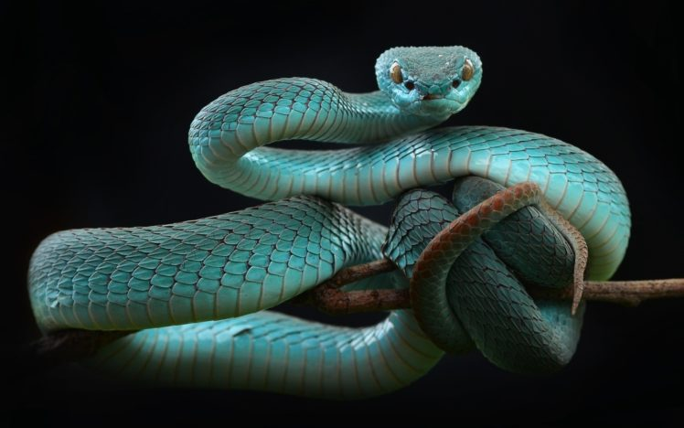

REPTILES

Reptiles are tetrapod animals in the class Reptilia a paraphyletic grouping comprising all amniotes except mammals and birds.
Properly, reptiles and birds are grouped together in the monophyletic group known as sauropsids.
The class Reptilia comprises turtles, crocodilians, snakes, amphisbaenians, lizards, tuatara, and their extinct relatives.
The study of the traditional reptile orders, historically combined with that of modern amphibians, is called herpetology.
The earliest known proto-reptiles originated around 312 million years ago during the Carboniferous period, having evolved from advanced reptiliomorph tetrapods that became increasingly adapted to life on dry land.
Some early examples include the lizard-like Hylonomus and Casineria. In addition to the living reptiles, there are many diverse groups that are now extinct, in some cases due to mass extinction events.
In particular, the Cretaceous–Paleogene extinction event wiped out the pterosaurs, plesiosaurs, ornithischians, and sauropods, alongside many species of theropods, crocodyliforms, and squamates (e.g., mosasaurs).
Most reptiles are oviparous, although several species of squamates are viviparous, as were some extinct aquatic clades[6] the fetus develops within the mother, using a (non-mammalian) placenta rather than contained in an eggshell.
As amniotes, reptile eggs are surrounded by membranes for protection and transport, which adapt them to reproduction on dry land.
Top
Home